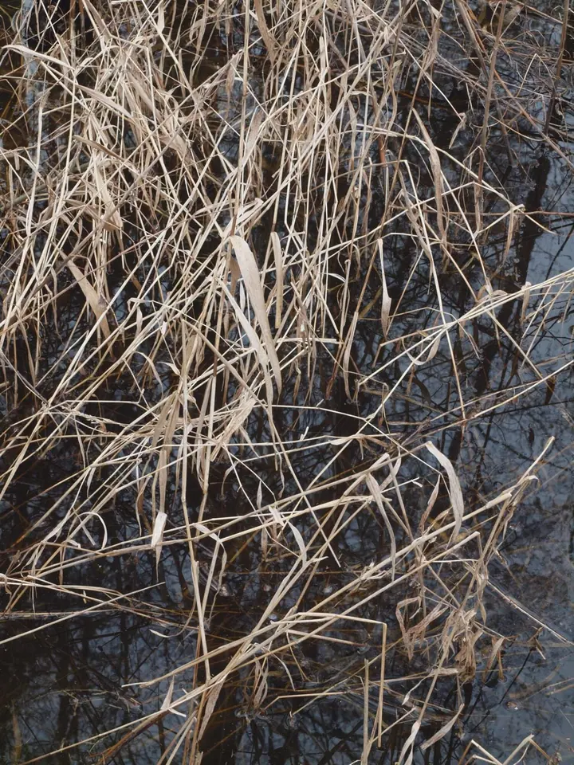
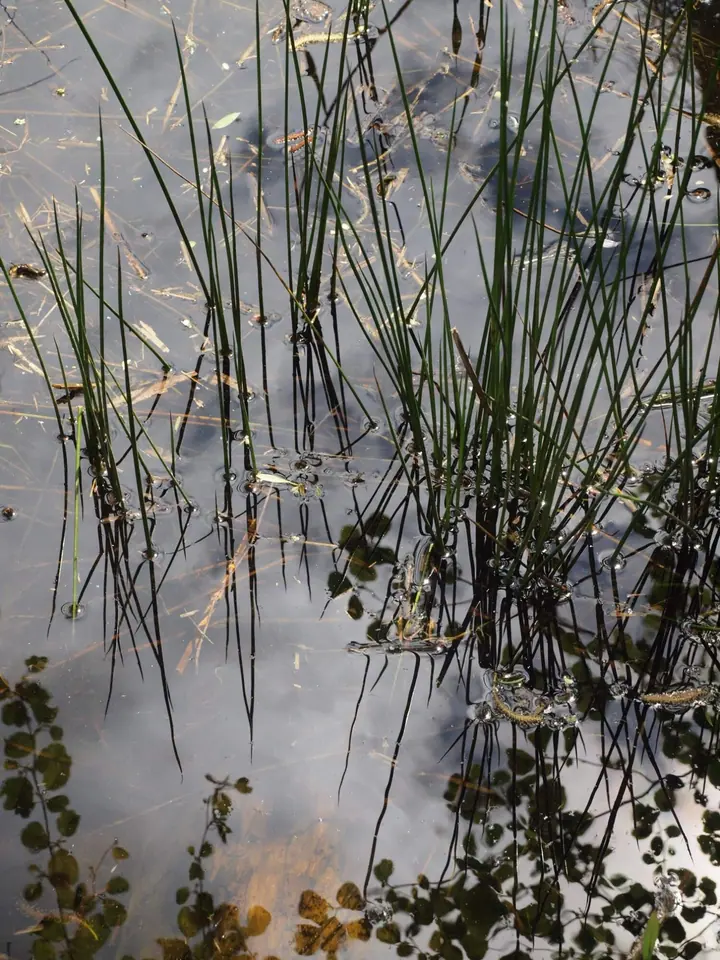

Fotografické cykly
Fotografuji vodní hladiny, odrazy, trávy a led. Z těchto snímků skládám cykly jako Proměny, Trávy, Fantomy nebo Olšanské hřbitovy.

Malíř a fotograf
Jmenuji se Igor Hlavinka, jsem malíř a fotograf z Prahy. Fotografuji vodní hladiny, suché trávy a odrazy stromů. Hledám v nich stejné struktury a energie, které mě celý život provázejí i v malbě.
Zeptat se na termín
Fotografuji vodní hladiny, odrazy, trávy a led. Z těchto snímků skládám cykly jako Proměny, Trávy, Fantomy nebo Olšanské hřbitovy.
Maluji krajinu, hory v mlze i abstraktní kompozice inspirované přírodními strukturami, znaky a symboly starověkých kultur.
Na pražském Proseku jsem realizoval nástěnné malby ve veřejném prostoru a k této práci se znovu vracím.
Narodil jsem se v Praze v roce 1959. Studoval jsem scénografii na SUPŠ a na DAMU a potom malbu v ateliéru prof. Františka Jiroudka na AVU. Už během studií jsem nejraději maloval krajinu.
V osmdesátých letech jsem pracoval na cyklu kreseb a maleb na téma holokaustu. V devadesátých letech následovaly obrazy inspirované přírodními strukturami, znaky písma a symboly starověkých kultur. Na symposiích nadace Hermit v klášteře Plasy jsem modeloval z hlíny fantaskní biomorfní stavby, několik let jsem restauroval a navrhoval zahrady.
Od roku 2007 se vracím ke krajině, v kresbě a malbě i ve fotografii. Vznikly cykly Ostrovy v oblacích, Proměny, Trávy, Fantomy a Olšanské hřbitovy. Jsem členem S. V. U. Mánes a moje práce jsou zastoupeny v soukromých i veřejných sbírkách.
Ozvěte se e-mailem a napište, co vás zaujalo, jestli konkrétní fotografie, obraz, nebo celý cyklus.
Pošlu vám ukázky a společně vybereme díla, která vás oslovují.
Pokud chcete práce vidět naživo, můžeme se domluvit na osobní schůzce v Praze.
Zbývající podrobnosti, třeba formát nebo předání, domluvíme podle toho, o jaké dílo jde.
Napište mi, o které dílo nebo cyklus máte zájem, a domluvíme se na podrobnostech.
Velkou část fotografií a obrazů najdete v mých albech na Rajčeti. Své práce vystavuji také na společných i samostatných výstavách.
Ano, nástěnné malby ve veřejném prostoru jsem realizoval na pražském Proseku. O nové zakázce se rád pobavím.
Hlavně proměny vody, světla a rostlin. Odrazy, led a trávy pro mě tvoří podobné struktury a řád, jaké hledám v malbě.